Profile and settings
Redesigning SumUp’s Profile & Settings
I helped redesign SumUp’s Profile & Settings to make them easier to navigate and less dependent on support. I led research and card sorting, shaped the new structure, and turned it into UI patterns that scale across web and mobile.
- Role
- Product Designer / UX Strategist
- Timeline
- 2023 to 2024
- Platforms
- Mobile app, web app and dashboard
- Status
- Launched on app and web in 2024
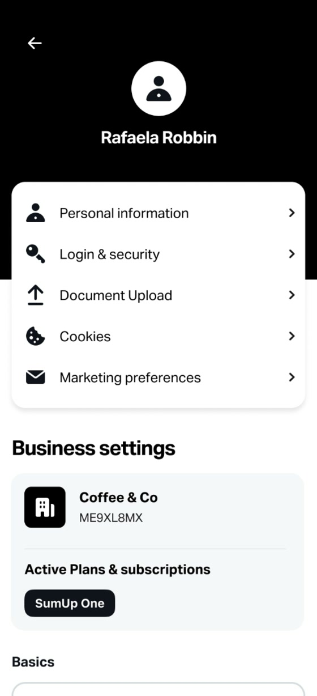
01. The problem
Profile and settings were fragmented across SuperApp and SuperWeb, with different behaviors and incomplete information on App. Most merchants mainly used the app, yet many critical profile and business details were only editable on web. As a result, “changing data” was a top driver of customer support calls, and many merchants had to call us for operations that should have been self-served.
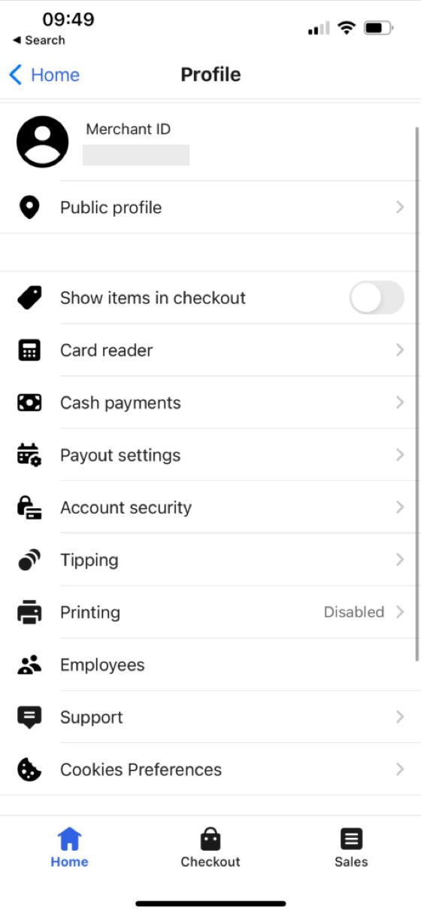
Scattered structure
Settings were split across different menus and sub-pages, making it difficult for merchants to find and manage key information.
Inconsistent naming across platforms
Web and mobile used different labels and groupings, which broke mental models and complicated support and documentation.
Platform cohesiveness
SuperApp and SuperWeb behaved differently, and the app showed incomplete information.
Low extensibility
There was no robust information architecture to host new features (for example, future identity, security, or financial controls) without adding more friction or duplication.
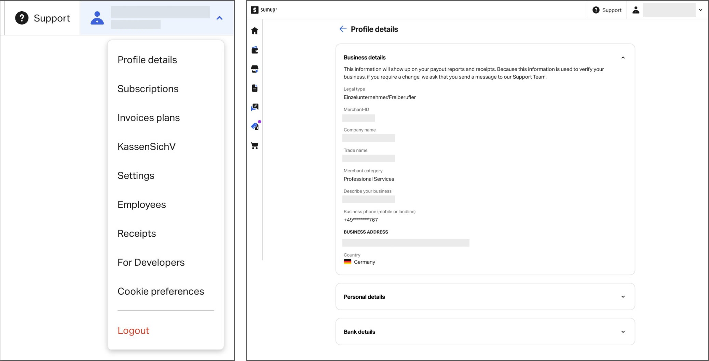
02. What I did
I led the research, shaped the new information architecture with two other designers, and designed it across app and web.
-
01 · Research and data
What: Found out why merchants called support about their profile and settings.
How: EU customer support data, app and web usage data, and job stories built from the support patterns.
Outcome: Changing data was a key reason for calls, and most merchants worked in the app, so fixing settings there would have the biggest impact.
Tableau
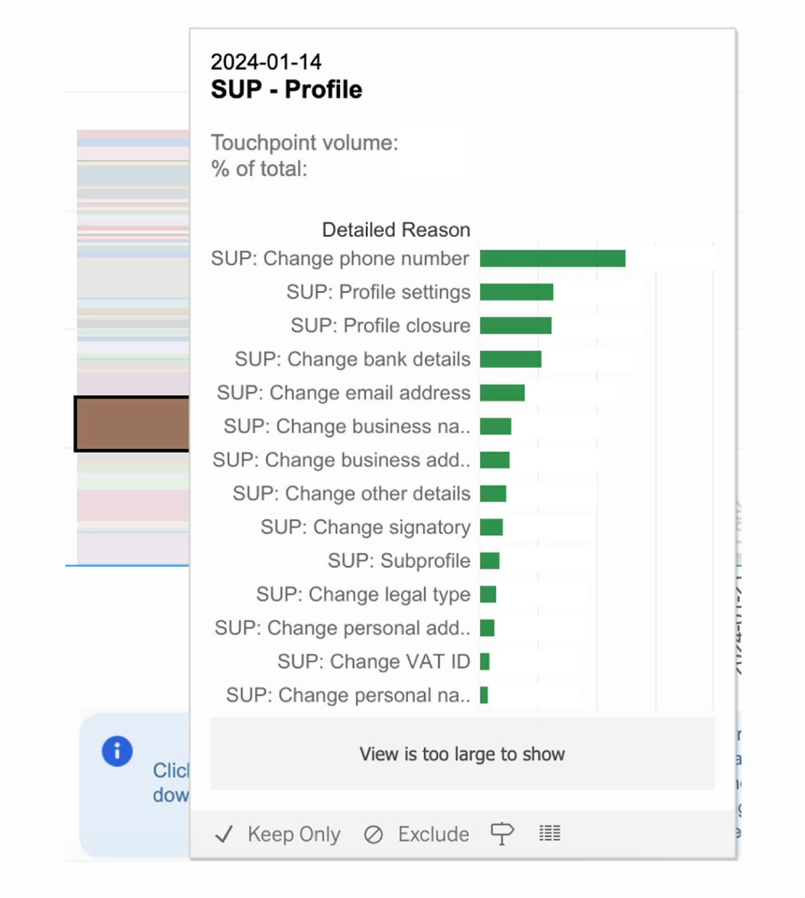
Support data: why merchants contacted support about their profile (numbers hidden) 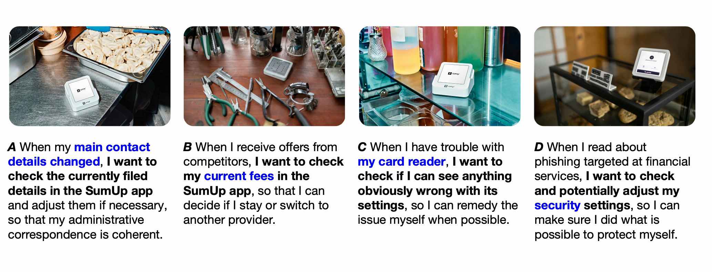
Job stories A to D, built from the support patterns -
02 · Card sorting
25 participants
What: Learned how merchants group their settings in their head.
How: Remote, unmoderated card sorting.
Outcome: Three mental models: front vs back office, money vs settings, and me vs my store.
Lookback, Optimal Workshop
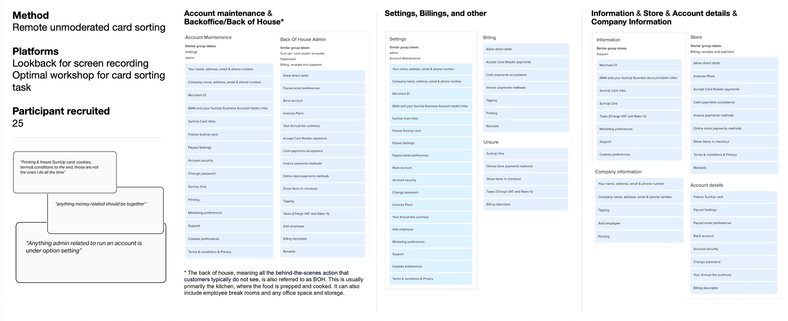
Card sorting: three groupings and participant quotes (names removed) -
03 · Market research
What: Validated and refined the proposed structure.
How: Reviewed N26, Revolut, Klarna, PayPal, Airbnb, Taxfix, Square, Zettle, Monzo and Coinbase.
Outcome: One Profile & Settings hub, a separate security section, and a more prominent Plans & Subscriptions.
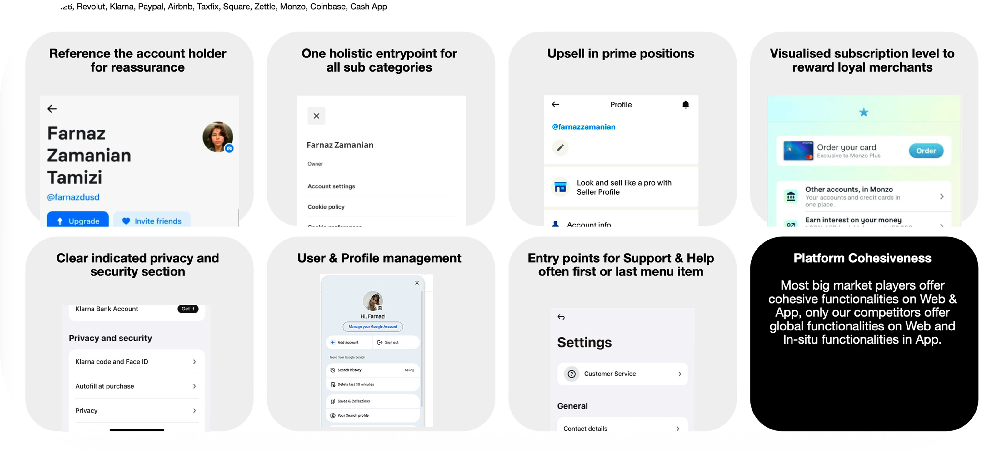
Market research takeaways -
04 · Design principles
5 principles
What: Set the lens every decision was checked against.
How: Drawn from the research and stakeholder alignment.
Outcome: Familiar standards, transparent communication, early security prioritization, defaults for the majority, and no non-settings in global settings.
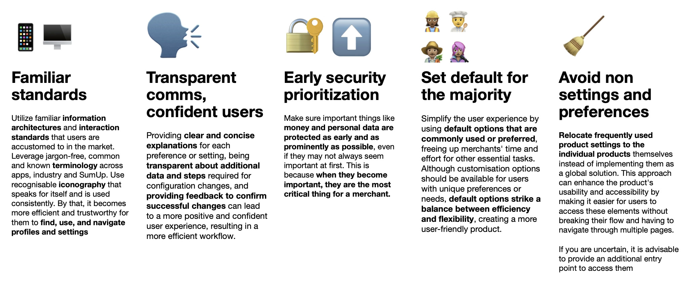
Five design principles -
05 · Shaping the architecture
What: Defined the backbone structure with two other designers.
How: Grouped settings by relevance, frequency of use and priority, decided what sits under user or business settings, and how sections are named and ordered.
Outcome: A clear split between user settings and business settings: version 1.0 on app and web, then one unified vision.
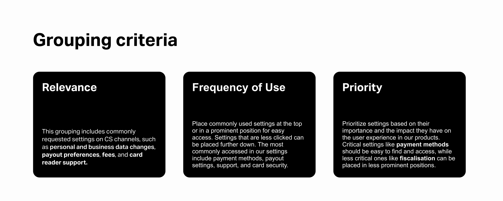
Grouping criteria: relevance, frequency of use, priority 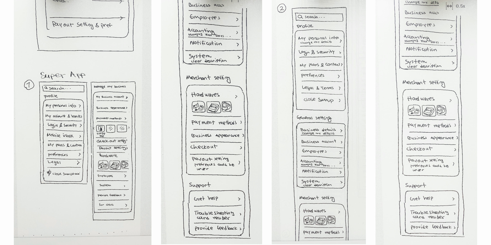
Early sketches of the app settings 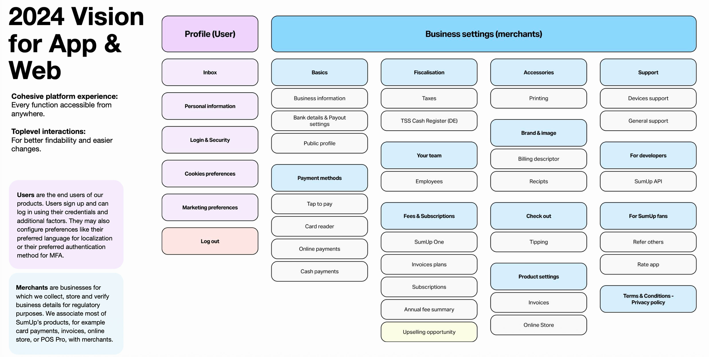
SuperApp and web vision: the 2024 information architecture
03. Key decisions
The first major change was a clear split between user and business settings, the same on app and web.
Split user and business settings
What relates to the merchant personally (login, security, language, notifications, profile picture) is separate from what belongs to the business (company details, payouts, payment methods, plans & subscriptions). The split follows the card sort and upcoming identity models.
Fewer, calmer entry points
Payout settings were over-exposed in both the app and the dashboard, so they were consolidated and made less prominent. Payment methods became one global “taking payments” category.
Transparent Plans & Subscriptions
A dedicated section shows the total a merchant pays each month or year and highlights plans they don’t use yet, which makes pricing transparent and creates a natural space for value-driven upsell.
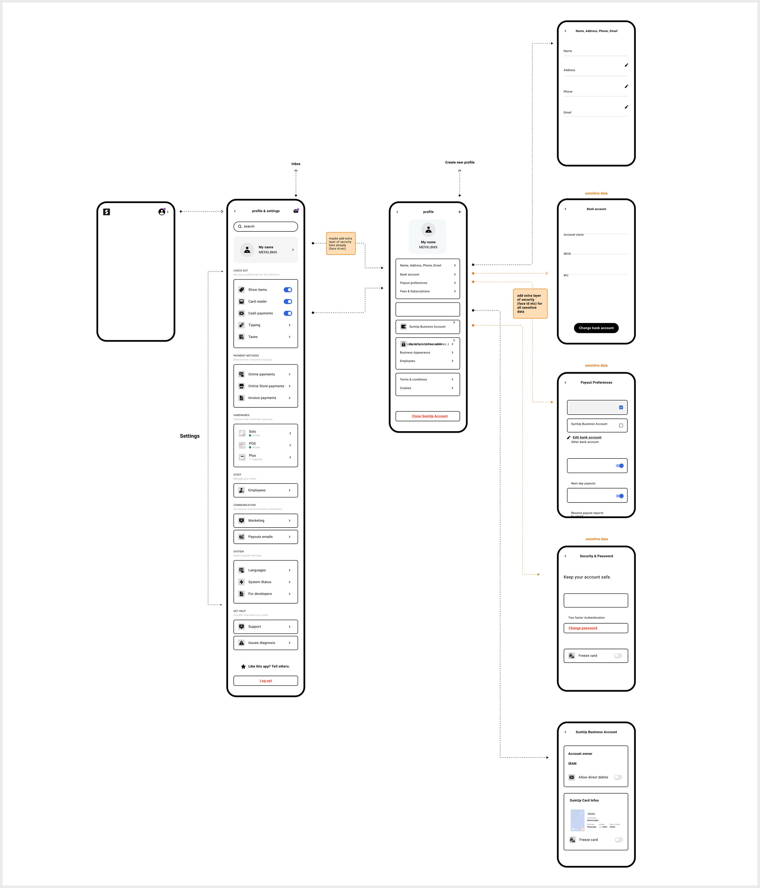
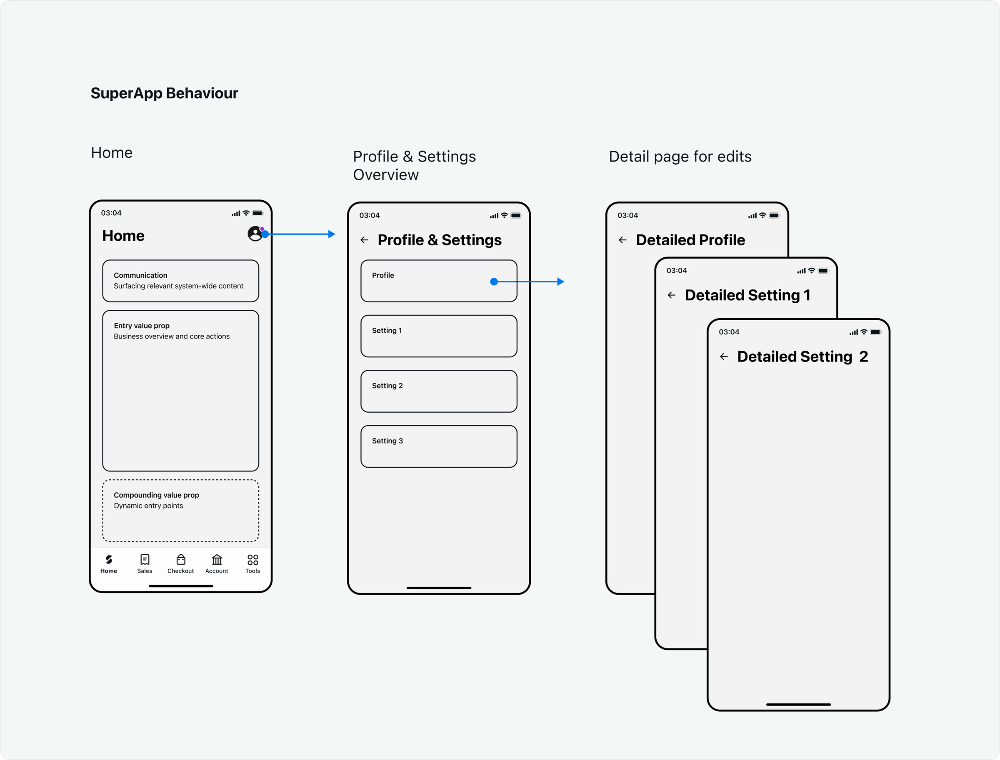
Manage multiple businesses effortlessly within your SumUp account
An opportunity to use this space for short routes to important actions, reduce support calls, and show that SumUp can manage multiple businesses.
Pain points focus
Adding shortcuts to the user’s requests, based on support calls and complaints, adds significant value to their experience.
Manage multi business
Separating the user entry point from the business indicator helps users understand that they have complete control over their businesses. It also shows that they can manage multiple companies within SumUp.
Familiar standards
A contextual drop-down menu is a common pattern in products that let users manage multiple accounts and settings, for example Google account, Figma and Slack.
- User identification
- Link to the profile & settings page
- ShortcutsConnected with the job stories and the main user requests
- Merchant selectionAfter the MVP
- Logout
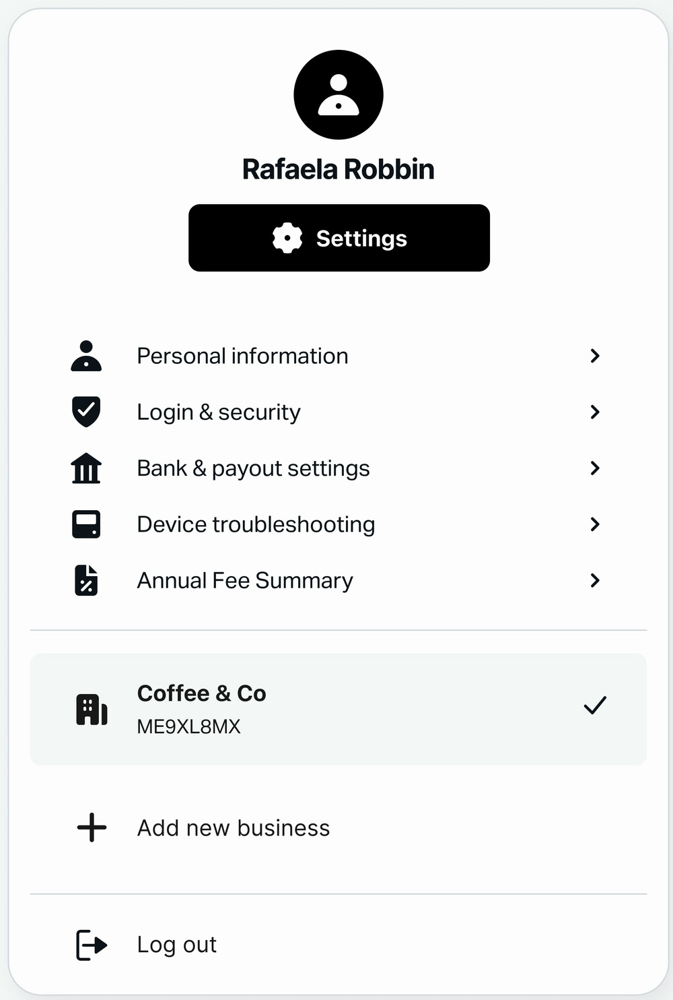
User settings
Users are the end users of our products. Users sign up and can log in using their credentials and additional factors. They may also configure preferences like their preferred language for localization or their preferred authentication method for MFA.
Merchant settings
Merchants are businesses for which we collect, store and verify business details for regulatory purposes. We associate most of SumUp’s products, for example card payments, invoices, online store, or POS Pro, with merchants.
Second iteration
As we wanted to add more functionality for the user, such as the ability to add a profile and celebrate paid plans and subscriptions, we highlighted this information on the user’s card.
04. Outcome
The goal was to reduce customer calls by at least 10% by letting merchants change their profile and settings themselves. The new Profile & Settings shipped across mobile and web and became the reference structure for later work.
Less duplication
It reduced duplication in settings and aligned labels across platforms.
A place for what’s next
Teams got a clear place to attach future features, such as the Fee Summary Box, fee negotiation and payout settings.
Teams aligned
Clearer categories, better alignment with identity and product teams, and a more cohesive web and app experience.
What I learned
Get the IA and naming right early
Getting the information architecture and naming system right early made every later feature easier to design and reason about.
Research first
Understanding merchants’ mental models through research and card sorting shaped an IA that helps them get jobs done faster. Without that research, none of these solutions would have been possible.